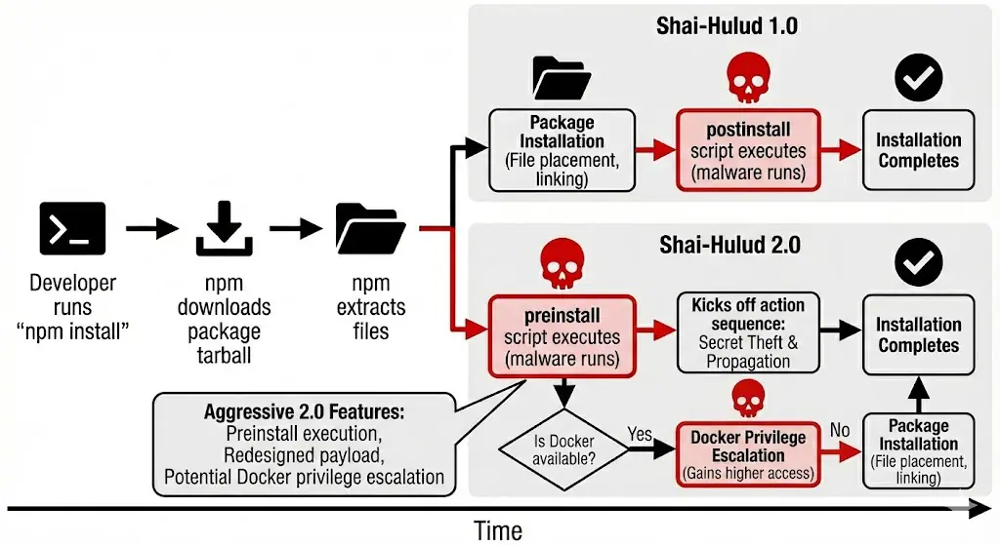
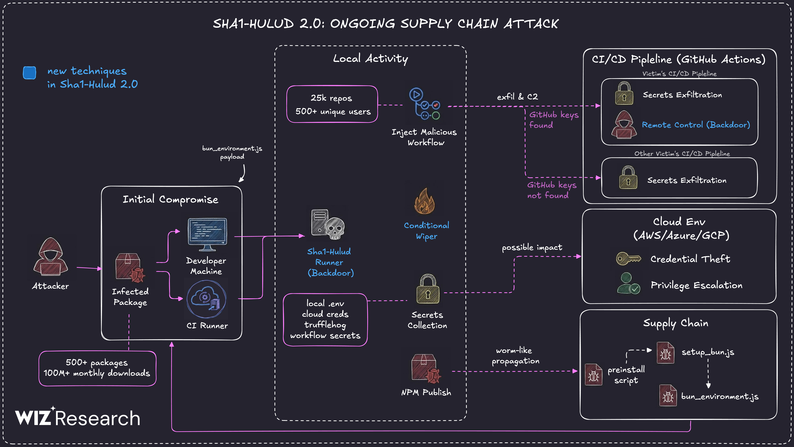

Presenting the Anatomy of a Supply Chain Threat
This talk focuses on the mechanics, impact and practical mitigations for development teams and security engineers.
Note: this campaign favored scale over stealth—mass publication increased chances of accidental installs and made manual moderation impractical.
Diagram highlights automated attacker workflow and the human typo that triggers execution.
The timeline below shows how the package is installed, how the lifecycle script runs, and where the malicious payload branches into credential theft and propagation.

The second image shows how the malware spreads across local developer systems, CI/CD pipelines, cloud environments, and additional packages through the supply chain.
